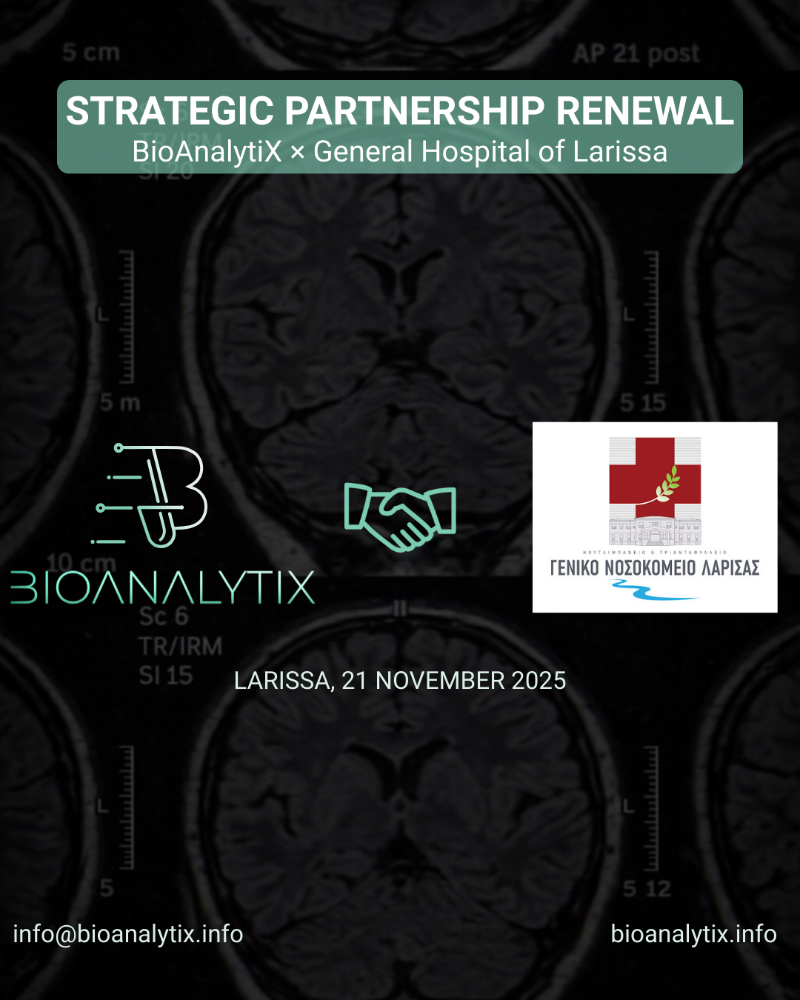
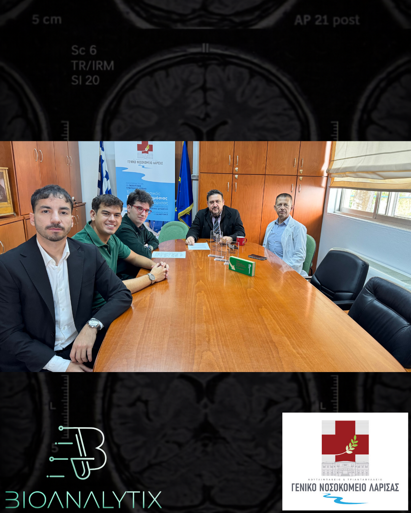

(1).PNG)


Company News
November 21, 2025
Strategic Partnership with General Hospital of Larissa Renewed and Expanded
BioAnalytiX announces the renewal and expansion of our strategic partnership with the General Hospital of Larissa, marking another milestone in advancing medical diagnostics and healthcare innovation.
BioAnalytiX Official